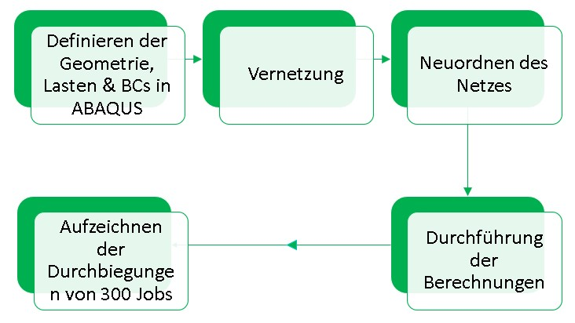
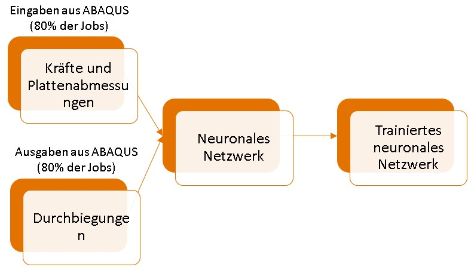
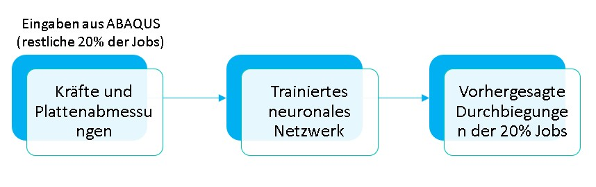
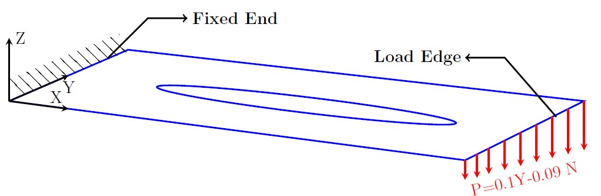
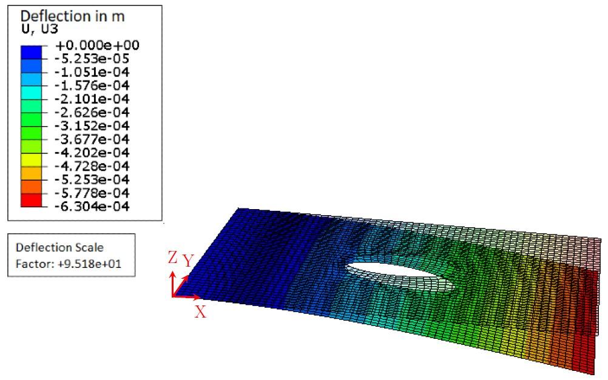
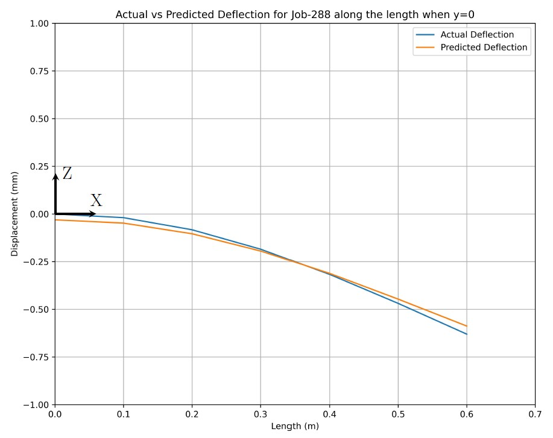
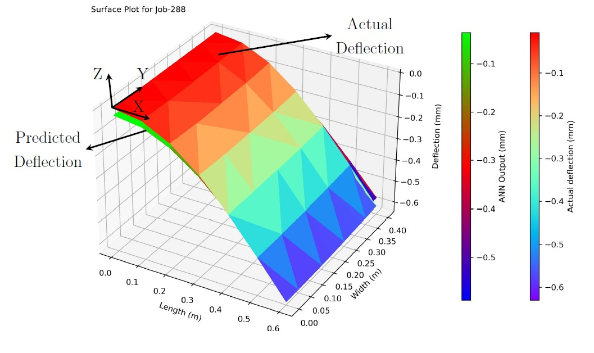
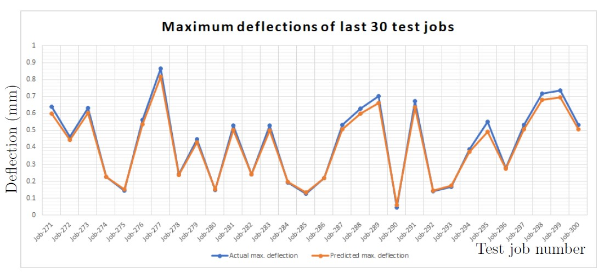

Mini-Projekt und studentische Hilfskraft
Institut für Strukturmechanik und Leichtbau (SLA), RWTH Aachen
Aufgabe
| Thema | Prediction of the deflection of a shell structure using an artificial neural network |
| Ansatz | - Definition der Modelle und Durchführung von Berechnungen in ABAQUS. - Entwicklung eines neuen künstlichen neuronalen Netzwerks zur Vorhersage der Ergebnisse und Vergleich mit den Ergebnissen aus ABAQUS. |
Definition von 300 Jobs in ABAQUS und Durchführung der Berechnungen
Entwicklung und Training des neuronalen Netzwerks
Ausgabeextraktion aus dem trainierten neuronalen Netzwerk
Problemaufbau
Ergebnis eines Jobs
  Ergebnisse der letzten 30 Jobs
Werkzeuge
Über das Unternehmen
Seit fast 70 Jahren ist das Institut für Strukturmechanik und Leichtbau (SLA) der RWTH Aachen ein Pionier in der Forschung und Lehre im Bereich Leichtbau. Das Institut, das sich auf die Optimierung von Luftfahrtstrukturen spezialisiert hat, hat seinen Fokus auf biomedizinische Technik, Sportgeräte und Mobilitätsanwendungen erweitert. Die Forschung des SLA umfasst Modellierung, Optimierung und Digitalisierung von Strukturen mit besonderem Fokus auf die strukturelle Integrität. Es verfolgt einen einzigartigen Ansatz, der Analyse, Tests und numerische Methoden kombiniert. Mit einem Team von mehr als fünfzig Mitarbeitern, modernen Produktionsanlagen und einem hochmodernen Testlabor arbeitet das SLA mit Partnern zusammen, um neuartige Leichtbau-Lösungen zu entwickeln und diese durch strenge Tests zu validieren.
Institut Link: Institut für Strukturmechanik & Leichtbau (SLA)